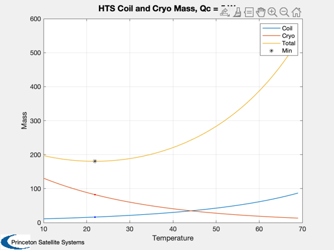

HTS Axial coil with cryocooler mass analysis
Calculate the coil and cryocooler mass for a magnet with a specific inner radius and target central field, as a function of operating temperature. This is also dependent on the amount of heat the cryocooler is removing, which is an input.
%-------------------------------------------------------------------------- % See also: CoilTurns, Cryocooler, PancakeMagnetMass, SuperPowerHTS %-------------------------------------------------------------------------- %-------------------------------------------------------------------------- % Copyright Princeton Satellite Systems, 2019. All rights reserved. % STTR NNX17CC74P %-------------------------------------------------------------------------- % Optimal mass for a single high-temperature superconducting coil % mirror coil: 15-20 T, inner radius 0.15 m % axial coil: 5-7 T, inner radius 0.5 m B0 = 2; % T, largest center magnet is ~2 T Ri = 0.45; % m qC = 5; % W; a guess nMag = 6; % number of magnets d = SuperconductorDataStructure('HTS'); Ts = linspace(10,69); Zs = zeros(size(Ts)); Ns = Zs; massCoil = Zs; massCryo = Zs; Iop = Zs; for k = 1:length(Ts) Ic = SuperPowerHTS( B0, Ts(k) ); Iop(k) = 0.6*Ic; N = 1; [massCoil(k),turns,height,width,N] = PancakeMagnetMass( B0, Ri, N, Iop(k), d ); Ns(k) = N; if Ts(k)>50 massCryo(k) = CryocoolerBrake( qC, Ts(k) ); else massCryo(k) = CryocoolerBrake( qC, Ts(k) ); end end mass = nMag*massCoil + massCryo; % Compare to low-temp at 4 K dLTS = SuperconductorDataStructure('LTS'); dLTS.Iop = 528; [massCoilLTS,turnsL,heightL,widthL,Blts] = CoilTurns(Ri,1.5e6,dLTS); % Cryocoolers massCryoLTS = CryocoolerBrake( qC, 4.2 ); tStr = sprintf('HTS Coil and Cryo Mass, Qc = %g W',qC); Plot2D(Ts,[massCoil;massCryo;mass],'Temperature','Mass',tStr) [~,kMin] = min(mass); hold on; plot(Ts(kMin),mass(kMin),'k*') plot(Ts(kMin),massCoil(kMin),'b.') plot(Ts(kMin),massCryo(kMin),'r.') legend('Coil','Cryo','Total','Min') %plot([10 70],massCoilLTS*[1 1],'g--') % an estimate of the structural mass (energy method), carbon fiber structure rhoM = 2500; % Density (kg/m^3) sigmaM = 1000e6; % Ultimate stress (N/m^2) volume = 4/3*pi*Ri^3; massStruct = MagnetMassVirial( rhoM, sigmaM, B0, volume ); if 0 disp('Use mouse to place text on plot') gtext(sprintf('B0 = %g T, D = %g m',B0,2*Ri)); end %--------------------------------------